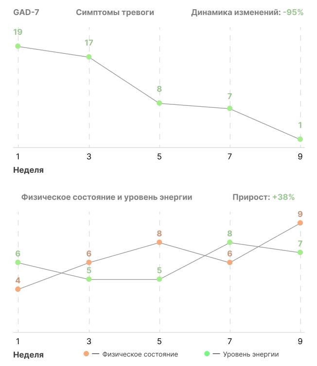

<section class="result">
  <div class="container">
    <h2 class="result__title title">Результаты участников программ</h2>
    <div class="swiper result-swiper">
      <div class="swiper-wrapper">
        <div class="swiper-slide">
          <div class="swiper-slide-inner">
            <p class="swiper-slide-title">
              "Пришла в терапию с тяжелой тревогой, усталостью и нарушениями
              сна. Благодаря программе и работе с психологом, смогла проработать
              негативные установки и привычки воспринимать все определенным
              образом. Именно они и провоцировали тревожность. В конечном итоге
              повысила эмоциональную устойчивость, нормализовала самочувствие и
              стала воспринимать многие события совершенно иначе."
            </p>
            <span class="swiper-slide-descr">— Клиент Uwio</span>
          </div>
          
        </div>
        <div class="swiper-slide">
          <div class="swiper-slide-inner">
            <p class="swiper-slide-title">
              "3 месяца назад прошел программу. Пришел с проблемой выгорания.
              Понравились как сессии с психотерапевтом, так и занятия между
              ними. Большим плюсом было то, что вся терапия проходит в одном
              приложении, это очень удобно. Пользуюсь им до сих пор, не смотря
              на то, что программа уже закончилась. Сейчас у меня больше энергии
              и повысилась личная эффективность. Получается отдыхать и
              чувствовать себя после этого объективно отдохнувшим. Это был
              отличный опыт!"
            </p>
            <span class="swiper-slide-descr">— Клиент Uwio</span>
          </div>
          
        </div>
        <div class="swiper-slide">
          <div class="swiper-slide-inner">
            <p class="swiper-slide-title">
              "Пройти программу было лучшим для меня решением. За 9 недель я
              смог не только выйти из состояния полного упадка, но и освоить
              навыки, которые позволят обрести контроль над жизнью"
            </p>
            <span class="swiper-slide-descr">— Клиент Uwio</span>
          </div>
          
        </div>
      </div>
      <div class="swiper-button-prev"></div>
      <div class="swiper-button-next"></div>
      <div class="swiper-pagination"></div>
    </div>
  </div>
</section>
